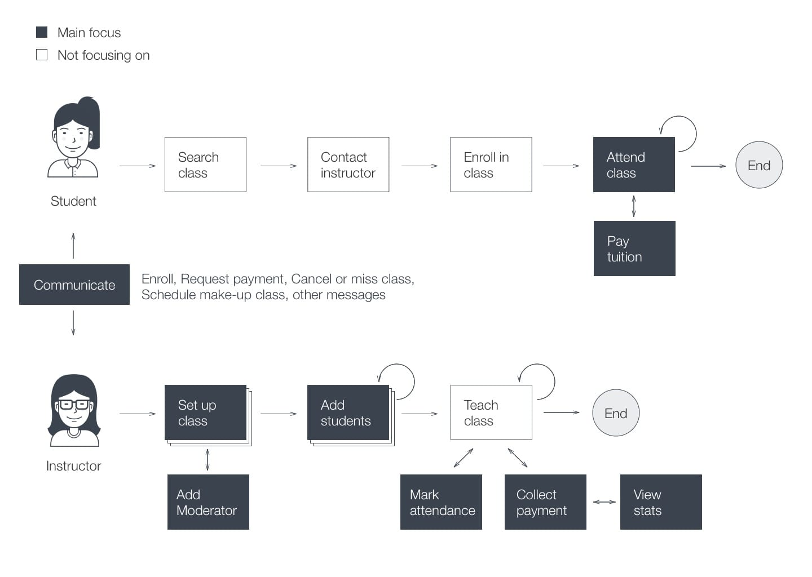
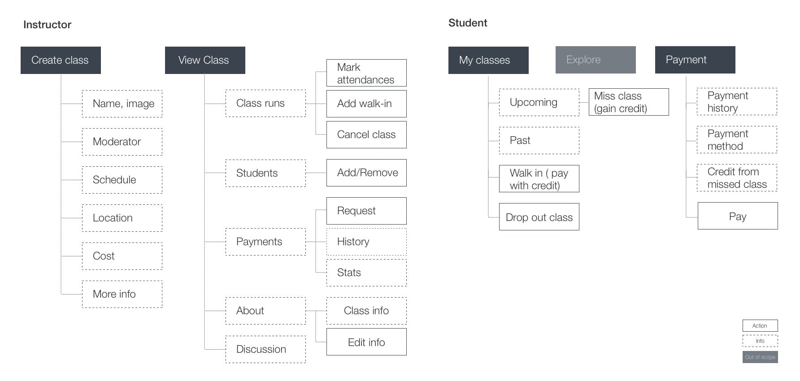

ClassTrack Design
An attendance and payment management tool inside Facebook
Background
On a Tuesday night, I took an Uber at the surge hour, arrived on time for my drawing class, but only saw my boyfriend standing in front of a closed door. He said, the instructor cancelled the class by email. We were not informed as we are not in the regular class list — it was our make-up class that day, and the instructor forgot to add us there in her attendance management spreadsheet.
Bummer.
My drawing instructor is a middle-aged lady. She owns a lovely art studio, teaching 4–6 classes each week and managing all the enrollments, attendances, and payments in a spreadsheet. I asked her how the spreadsheet works out for her.
Inna: It is not perfect, do you know any other tools?
I: What doesn’t work for you?
The moment I started this conversation, design challenge is accepted.
Role
With a ultimate goal of designing technology for a wider audience, I initiated the project to reduce instructors' time spent on administrative chores and designed a attendance and payment management tool inside Facebook.
What's The Gap
Inna spends lots of time in managing the spreadsheet manually. Here are some key tasks:
- Clone a new tab and fix the date every month
- Copy email addresses manually to send tuition reminder, class cancelation, or any other messages.
- Mark on the spreadsheet right away for every change (attendance, payment, or makeup class request) or else it is very easy to lose track
- Recently, she has another strong motive to look for another tool: Can I share this part of spreadsheet with my contractor without her viewing my other information?
Inna’s art studio hosts other classes which are taught by another instructor (her contractor), she needs her to mark attendances without her managing payment and viewing other class data.
On the other side (students’ side), my boyfriend and I find it difficult to remember how much we have paid, or how many make-up classes we have left. We do not have any spreadsheet to track those (it is too much, even for me :D).
The question is:
how can we (both instructors and students) track the attendances and payments more seamlessly?
Design Process
Hypothesis

User flow
With the goal of tracking the attendances and payments, I highlight the key parts I want to focus on in the user flow. I also add 2 features that are almost impossible in spreadsheet: add moderator and view stats. Other scenarios such as parent/guardian, or student referral program are left out to keep the MVP(minimum viable product) lean.
How does it fit in Facebook
Don’t reinvent the wheel, just realign it. — Anthony J. D’Angelo
Facebook has 3 features that very related to ClassTrack modules:
- Facebook event: bring people together. Each class could be considered as a recurring event with each run as a single event.
- Facebook page: a place for people to meet your business. All the classes hosted by the business owner can be displayed as a tab under her Facebook page, just like other tabs such as Posts, Videos, Events, Services, Jobs, and etc.
- Facebook group: a space to communicate about shared interests with certain people. The concept of class is very similar to group. Both manage members and events. The difference is Facebook Group focusing on members and their communication, while the ClassTrack aims to serve instructor administrative needs first.
In a sentence, ClassTrack is a recurring-event group under Facebook page.

The feature and content mapping
After several rounds of playing with different mobile apps, drawing low-fidelity wireframes, doing self-evaluation, and getting feedback from friends, I mapped the main features and content as below.
User testing with the prototype
Instructor's tasks:
- Find class under your business page
- Create a class
- Add students
- Take attendance
- Request payment
Findings and improvments:
- When creating a class, one participant asked Why I need to set the instructor. Should not it be myself? I explained the contractor case. And I also set a default value in this field.
- I updated a few labels that confused my participants. For examples, in add students, change "Invited by Email" to "Added by Email"; update "pay $180" to "Mark as paid".
Student's tasks:
- When is your next class for oil painting?
- Have you paid your April tuition?
- How many make up classes (credits) do you have?
Findings and improvments:
- One participant asked why upcoming class runs is a vertical list while enrolled classes use horizontal scrolling layout? I adopted the pattern from event UI but after thinking more about the use case, horizontal scrolling is for exploration more, I changed my enrolled classes back to a vertical list.
- Another participant mentioned she did not notice one class is cancelled. To get more attention I applied red color to the canceled class run.
Outcome
This project is a great opportunity for me to hone my design skills. The idea also motivated my instructor to develop her Facebook page by sharing detailed information of the upcoming events and featuring some of the student’s creations.